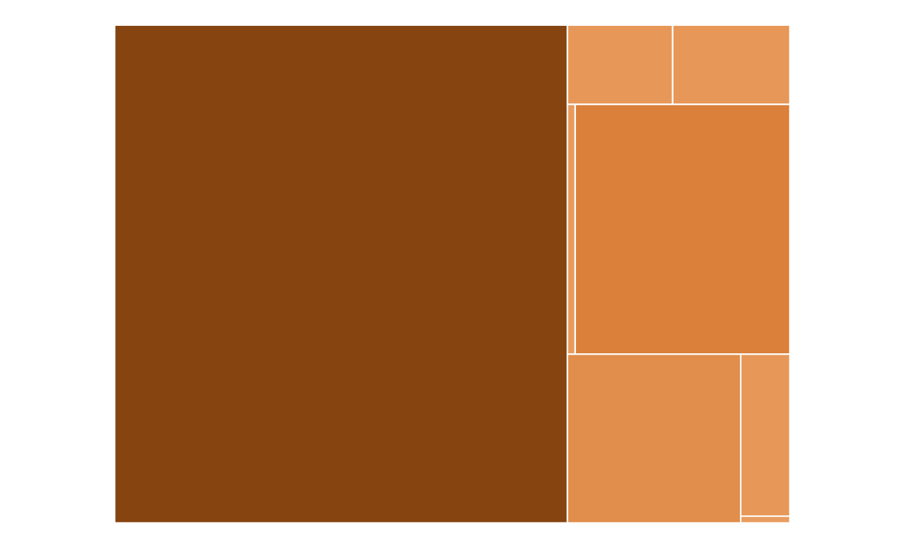
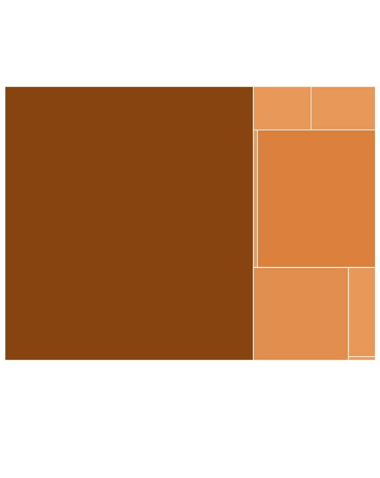

After SEVIS and visa terminations, international students lose trust in a future in the U.S.
tktk
By Tiffany Xinran Wang | Columbia Radio News
Duration: tktk
A graduate student from Turkey was going through his second semester when he received a
too-bad-to-be-true notice from his school in Delaware on March 22.
For the following month, he missed multiple exams, stayed up until daylight, kept the news to
himself and lived in limbo.
Thousands of international students’ SEVIS records were abruptly terminated and then restored last
month.
It seems like the government walked back their mistake and all is fine, but students say otherwise.
The disillusionment and paranoia many international students experienced, including those
unaffected, have lingered on.
Current students are looking for a way out, and future students are shifting their eyes to other
countries.
“You can have a battalion of judges telling you that you are rightfully here to stay, but if the
people’s minds don’t change, you’re not gonna have a good time,” said the Turkish student in
Delaware,
who asked to be identified by his Discord username, heavygrin.
Heavygin’s student status was reinstated on April 27, but his visa was not. The only way to obtain a
valid visa is to leave the country to apply for a new one, a risky move given his revocation record.
Many students whose SEVIS was restored are finding themselves in this dilemma. They are afraid that
a revoked visa might become the basis for SEVIS re-termination, or even deportation.
According to a survey sent out to the Discord server, “F-1 SEVIS TERMINATIONS,” by an Indian PhD
student, Vladimir, around 80% of the students who answered to the question “How anxious are you
feeling” felt extremely anxious.
And almost 80% of those feeling anxious on levels 8 to 10 were not even directly impacted.
How anxious do you feel about the latest developments associated with immigration enforcement in the U.S.?
On anxiety level 1 to 10, most survey participants answered higher numbers on the scale.

Level 10
extremely anxious

Level 10
extremely anxious
“ I just immediately felt like all my motivation just suddenly washed away,” heavygrin said. Between his student status termination and restoration, he missed several exams and could not do anything aside from scrolling through his phone for news updates.
Heavygrin said he left his software development career and his newly married wife in Turkey last year to pursue his real passion, cybersecurity, in the U.S.
“Back home, there was not much opportunity to study cybersecurity,” said heavygrin. “My first instinct was to go to America because for studying technology, I don’t think it can get better than that.”
But now, he cannot decide whether he should take his credits from the Delaware school and transfer to another country, or finish up his degree with a GPA lower than he could have maintained.
A Korean student studying in Iowa, who was also affected by SEVIS termination, echoed that state of confusion.
“For the last few weeks, I couldn't focus on school at all,” said the Korean student, who asked to stay anonymous in fear of bringing trouble to his professors who allowed him to take classes when his status and visa were revoked. “All I could do was to read every single court docket I can find online and prepare to sue.”